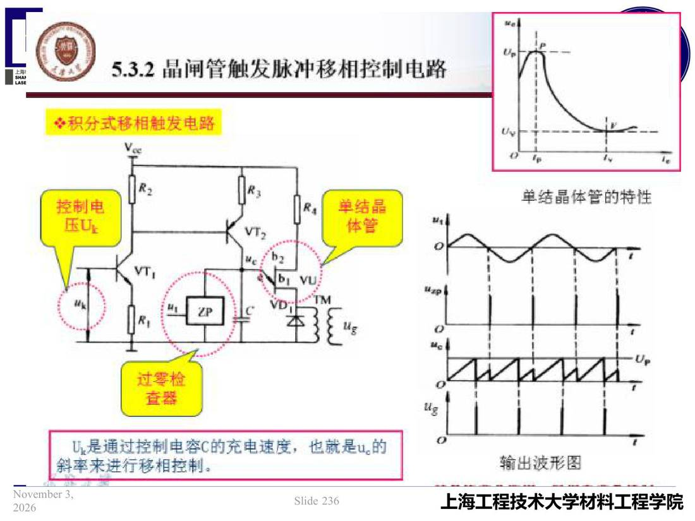

06 第6章 逆变式弧焊电源/p236 本章导览
p236 本章导览
📄 原文：📄 弧焊电源 课件（PDF 第 236 页）（幻灯片 236/273；PDF 第 236 页）
本章导览

讲义原文
本页在课件中是纯图文版式（无文字层），内容以页图与下面的 OCR 文本为准。
页面文字（OCR 机读，可能有错字，以页图为准）
上海 5.3.2晶闸管触发脉冲移相控制电路 ※积分式移相触发电路 单結晶体管的特性 控制电 单结晶 体管 过零检 查器 U是通过控制电容C的充电速度，也就是u。 斜率来进行移相控制。 输出波形图